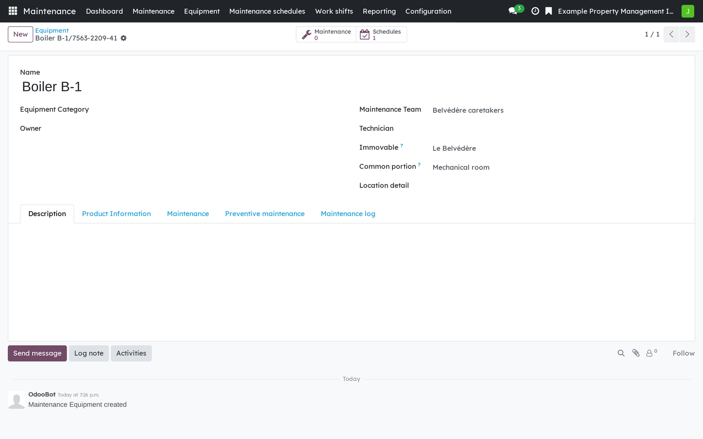
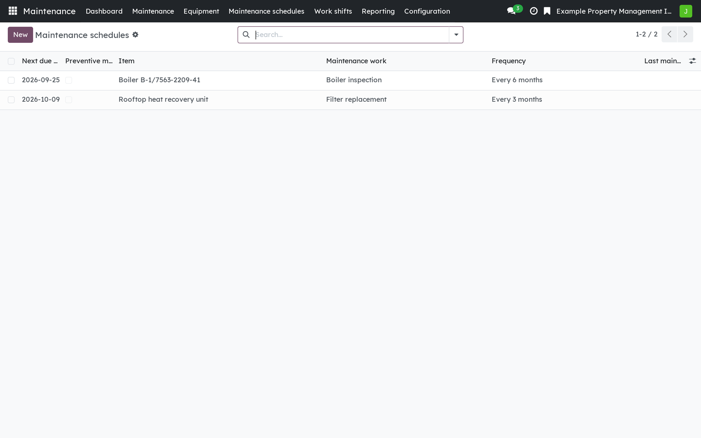
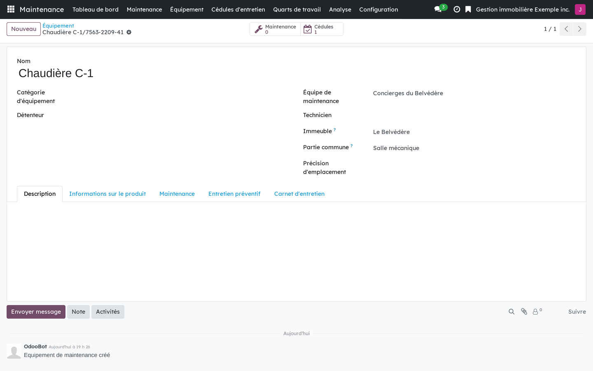
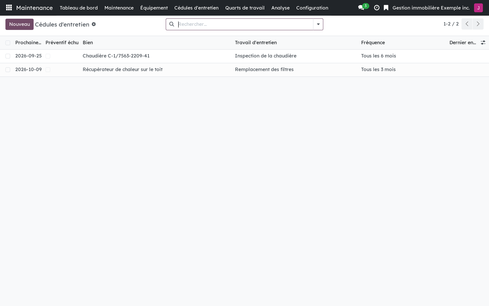

Version française plus bas.
Odoo's Maintenance app keeps an equipment register that knows everything about a device except where it is: its only location field is free text. This module builds on Maintenance rather than copying it, and gives the equipment its place in the building: the immovable, the fraction or the common portion. It serves the caretakers and technicians of a syndicate as well as those of a rental building, and it does not require the co-ownership modules.

A piece of equipment placed in the building: the immovable, the common portion, and the team that answers for it.

Preventive schedules carried by the equipment, each with its next due date.
Requires Properties: foundation (bf_property_core) and Odoo Maintenance.
Three bridges install themselves when their other side is present: Properties: from
the request to the work (bf_property_operations_portal), Co-ownership:
the maintenance log and operations (bf_property_operations_records), and
Operations: privacy bridge, Act 25 (bf_property_operations_privacy).
Business Source License 1.1. You may use this module in production for your own internal business operations, which include administering immovables that you own or that you are constituted to administer, and letting a person acting on your behalf use your instance for that purpose. Administering immovables for the account of others, or providing the module to third parties as a product or service, whether hosted, managed or resold, requires a separate written agreement with the licensor. Each version converts to LGPL-3.0-or-later on the Change Date stated in the LICENSE file, which sets out the exact terms.
L'application Maintenance d'Odoo tient un registre d'équipements qui sait tout d'un appareil sauf où il se trouve : son seul champ d'emplacement est un texte libre. Ce module s'appuie sur Maintenance au lieu de la recopier, et donne à l'équipement sa place dans le bâti : l'immeuble, la fraction ou la partie commune. Il sert les concierges et les techniciens d'un syndicat comme ceux d'un immeuble locatif, et n'exige pas les modules de copropriété.

Un équipement situé dans le bâti : l'immeuble, la partie commune, et l'équipe qui en répond.

Les cédules préventives portées par les équipements, chacune avec sa prochaine échéance.
Exige Immeubles : socle (bf_property_core) et la Maintenance d'Odoo. Trois
ponts s'installent d'eux-mêmes quand l'autre côté est présent : Immeubles : de la
demande au travail (bf_property_operations_portal), Copropriété : le
carnet et l'exploitation (bf_property_operations_records), et
Exploitation : pont vie privée, Loi 25 (bf_property_operations_privacy).
Business Source License 1.1. Vous pouvez utiliser ce module en production pour vos propres activités internes, ce qui comprend l'administration des immeubles dont vous êtes propriétaire ou que vous êtes constitué pour administrer, et l'usage de votre instance à cette fin par une personne qui agit pour votre compte. Administrer des immeubles pour le compte d'autrui, ou fournir le module à des tiers comme produit ou service, hébergé, géré ou revendu, exige une entente écrite distincte avec le concédant. Chaque version passe sous LGPL-3.0 ou ultérieure à la date de changement inscrite au fichier LICENSE, qui fait foi.